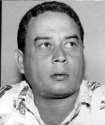

Natural de Monte do Carmo–TO, Terezino Pereira Lopes nasceu em 15 de outubro de 1953. Casado com Vera Lúcia, é pai de dois filhos. Na década de 1980, foi diretor de esportes da Casa do Estudante Norte Goiano (CENOG), sob a presidência de Darci Coelho. Nessa função, destacou-se pela organização do Campeonato de Futebol dos Estudantes do Norte Goiano, em Goiânia, que reunia 24 equipes formadas por filhos de nortistas que estudavam na capital goiana.
As finais do torneio eram realizadas no Estádio Olímpico de Goiânia, com presença do então governador Henrique Santillo. A organização do evento era assinada com a sigla T.J.O., em referência aos organizadores Terezino, Joaquinzão (Joaquim Alves de Castro) e Otoniel Andrade. O torneio teve papel marcante na integração da juventude nortista, muitos dos quais se tornaram futuros profissionais e líderes do Estado do Tocantins nas áreas do Direito, Medicina e Política.
